9th Grade Animals & Nature Worksheets
301 Animals & Nature resources for 9th Grade, ready to print: Zebra, Zea mays, Waschbär, Vita and more. Each resource page shows the grade range, page count and a preview and links straight to the product on TpT.
301 resources

Gli animali – Italian Reading Comprehension BUNDLE | Animal Schede

Les animaux – French Reading Comprehension BUNDLE | Animal Fiches
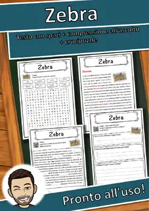
Zebra – Italian Reading Comprehension Worksheet (Scheda): Cloze & Listening
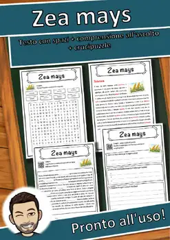
Zea mays – Italian Reading Comprehension Worksheet (Scheda): Cloze & Listening
Waschbär – Italian Reading Comprehension Worksheet (Scheda): Cloze & Listening
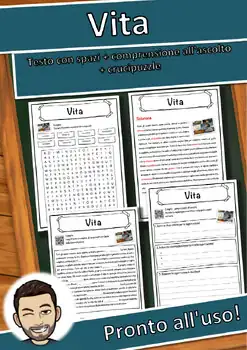
Vita – Italian Reading Comprehension Worksheet (Scheda): Cloze & Listening
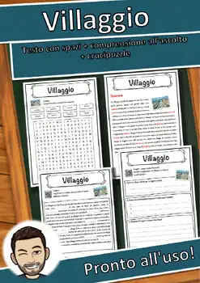
Villaggio – Italian Reading Comprehension Worksheet (Scheda): Cloze & Listening

Vertebrata – Italian Reading Comprehension Worksheet (Scheda): Cloze & Listening

Verkehr – Italian Reading Comprehension Worksheet (Scheda): Cloze & Listening

Veganismo – Italian Reading Comprehension Worksheet (Scheda): Cloze & Listening

Uva – Italian Reading Comprehension Worksheet (Scheda): Cloze & Listening

Urtica – Italian Reading Comprehension Worksheet (Scheda): Cloze & Listening
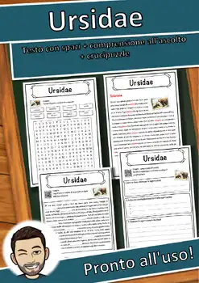
Ursidae – Italian Reading Comprehension Worksheet (Scheda): Cloze & Listening
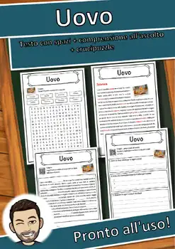
Uovo – Italian Reading Comprehension Worksheet (Scheda): Cloze & Listening
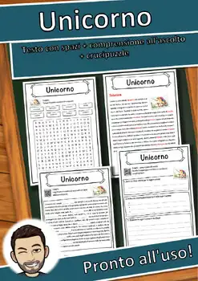
Unicorno – Italian Reading Comprehension Worksheet (Scheda): Cloze & Listening
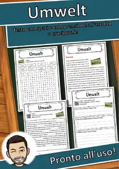
Umwelt – Italian Reading Comprehension Worksheet (Scheda): Cloze & Listening
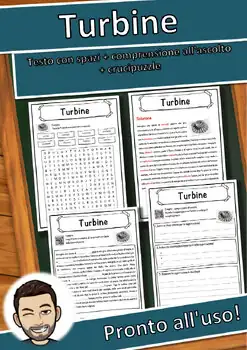
Turbine – Italian Reading Comprehension Worksheet (Scheda): Cloze & Listening
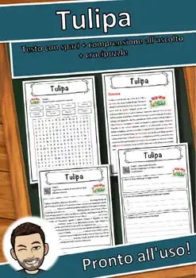
Tulipa – Italian Reading Comprehension Worksheet (Scheda): Cloze & Listening
Triticum – Italian Reading Comprehension Worksheet (Scheda): Cloze & Listening
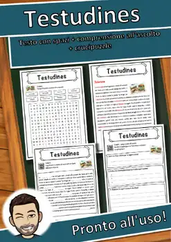
Testudines – Italian Reading Comprehension Worksheet (Scheda): Cloze & Listening
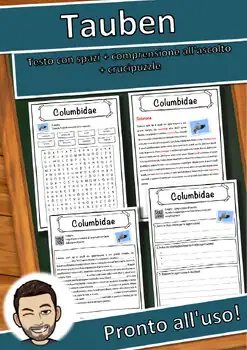
Tauben – Italian Reading Comprehension Worksheet (Scheda): Cloze & Listening
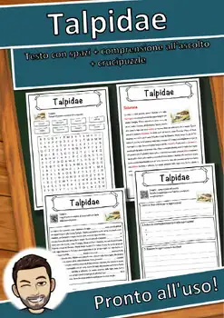
Talpidae – Italian Reading Comprehension Worksheet (Scheda): Cloze & Listening
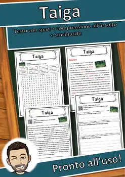
Taiga – Italian Reading Comprehension Worksheet (Scheda): Cloze & Listening
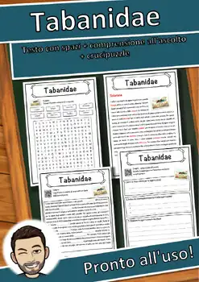
Tabanidae – Italian Reading Comprehension Worksheet (Scheda): Cloze & Listening
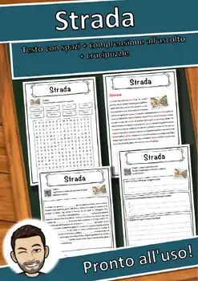
Strada – Italian Reading Comprehension Worksheet (Scheda): Cloze & Listening
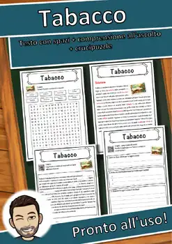
Tabacco – Italian Reading Comprehension Worksheet (Scheda): Cloze & Listening

Specie – Italian Reading Comprehension Worksheet (Scheda): Cloze & Listening

Seta – Italian Reading Comprehension Worksheet (Scheda): Cloze & Listening

Sojabohne – Italian Reading Comprehension Worksheet (Scheda): Cloze & Listening

Scorpiones – Italian Reading Comprehension Worksheet (Scheda): Cloze & Listening

Serpentes – Italian Reading Comprehension Worksheet (Scheda): Cloze & Listening

Selce – Italian Reading Comprehension Worksheet (Scheda): Cloze & Listening

Sambucus – Italian Reading Comprehension Worksheet (Scheda): Cloze & Listening

Salvia – Italian Reading Comprehension Worksheet (Scheda): Cloze & Listening

Salmone – Italian Reading Comprehension Worksheet (Scheda): Cloze & Listening

Safari – Italian Reading Comprehension Worksheet (Scheda): Cloze & Listening

Ruminantia – Italian Reading Comprehension Worksheet (Scheda): Cloze & Listening

Reptilia – Italian Reading Comprehension Worksheet (Scheda): Cloze & Listening

Razzo – Italian Reading Comprehension Worksheet (Scheda): Cloze & Listening

Rattus – Italian Reading Comprehension Worksheet (Scheda): Cloze & Listening

Raggi X – Italian Reading Comprehension Worksheet (Scheda): Cloze & Listening

Quercus – Italian Reading Comprehension Worksheet (Scheda): Cloze & Listening

Quarantena – Italian Reading Comprehension Worksheet (Scheda): Cloze & Listening

Pyrus – Italian Reading Comprehension Worksheet (Scheda): Cloze & Listening

Pteromyini – Italian Reading Comprehension Worksheet (Scheda): Cloze & Listening
Pongo – Italian Reading Comprehension Worksheet (Scheda): Cloze & Listening

Plantae – Italian Reading Comprehension Worksheet (Scheda): Cloze & Listening

Pinnipedia – Italian Reading Comprehension Worksheet (Scheda): Cloze & Listening
No resources found – try a different search term or filter.